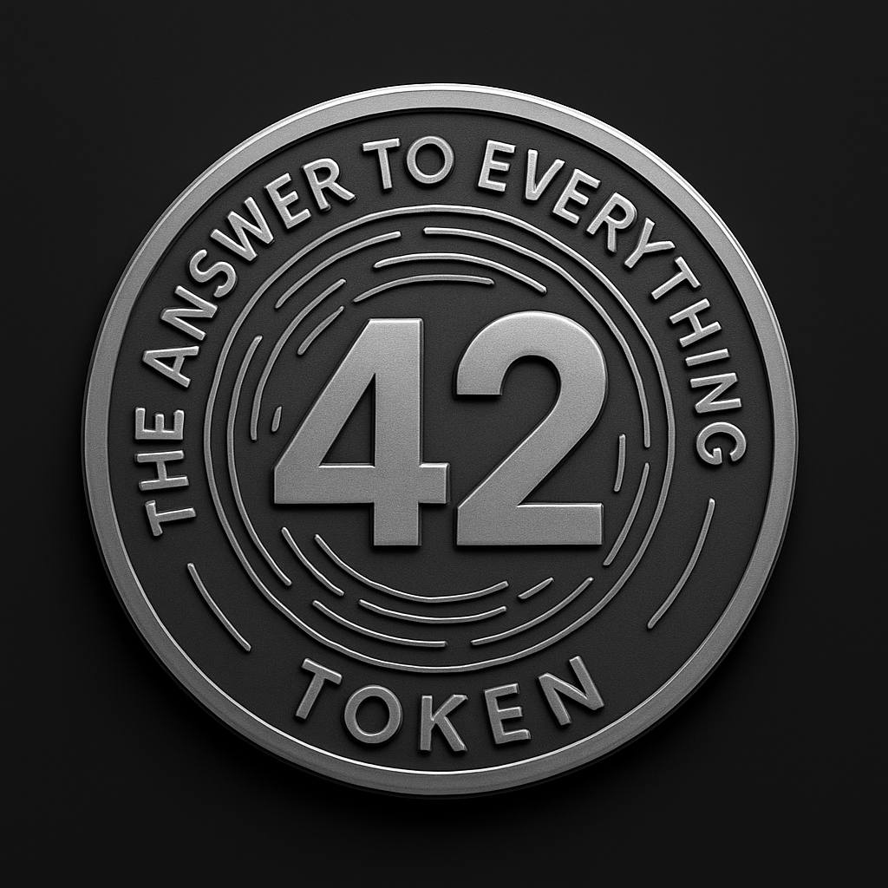

Der Token für Menschen, die mitten im Wandel stehen.
Token 42 – The Answer To Everything

About T42
Der Token für Menschen, die mitten im Wandel stehen, lachen können – und akzeptieren, dass ein kleiner Rest Wehmut dazugehört.
T42 ist humorvoll, aber tiefgründig. Er symbolisiert Veränderung, Sinnsuche und den Mut, alten Stress hinter sich zu lassen – auch wenn dabei ein Stück Vergangenheit zurückbleibt, das einmal wichtig war.
T42 ist ein kleiner Mittelfinger an Druck, Chaos und Jobs, die einem die Freiheit rauben. Er steht für ein Leben, das man ernst nimmt – aber nicht zu ernst.
Wer T42 hält, hält nicht nur einen Coin, sondern eine Erinnerung daran, dass jeder Neuanfang leichter wird, wenn man ehrlich zu sich selbst ist – und über sich selbst schmunzeln kann.
Roadmap
Phase 1 – Birth of 42 Token erstellt, Logo gebaut, GitHub eingerichtet, Webseite gestartet.
Phase 2 – Der Mittelfinger an Stress Community aufbauen – die wichtigste Phase des ganzen Projekts.
Phase 3 – Mainnet Erwägung Vielleicht. Vielleicht nicht. T42 bleibt authentisch und ohne Druck.
Phase 4 – T42 Utility? Wenn's die Community will – optional und flexibel.
Phase 5 – The Answer To Everything Merch + Easter Eggs. Spaß, Überraschungen und kleine Belohnungen.
Tokenomics
Total Supply: 1.000.000 T42
Steuern: 0% Buy / 0% Sell
Distribution: 100% an den Ersteller · Keine versteckten Wallets
Liquidity: Optional – flexibel für später
Burns: Derzeit keine geplant · optional möglich
Utility: Keine Verpflichtung · Community entscheidet